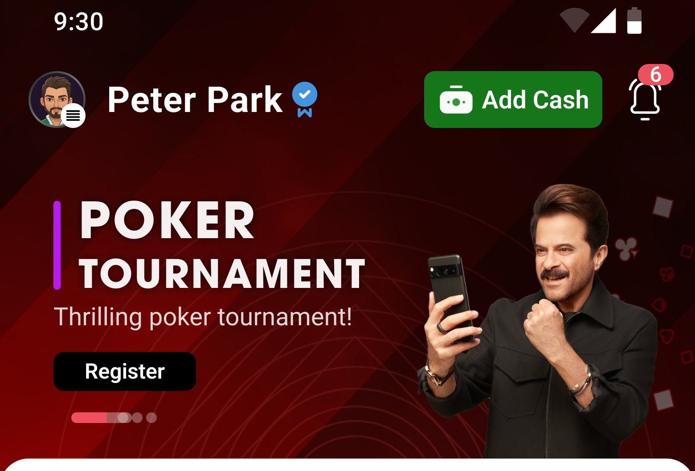
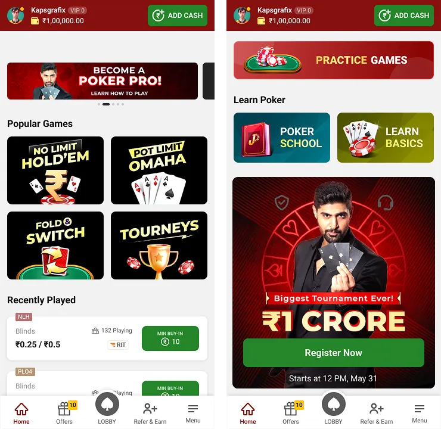
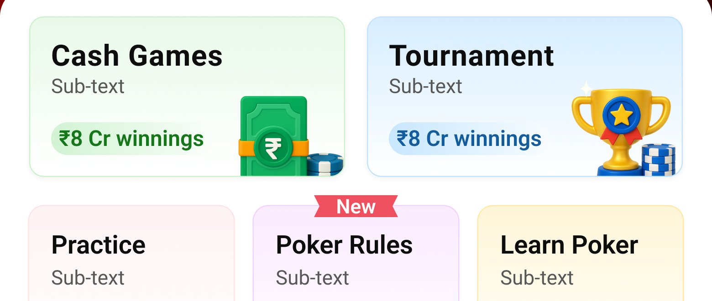
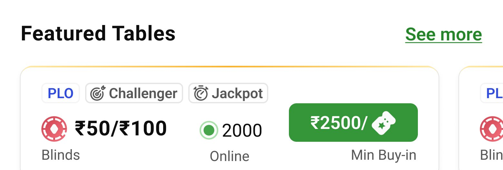

The lobby is the starting point of every player's journey — it has to balance discovery, efficiency, and trust for beginners, regulars, and high-stakes pros all at once.

The poker lobby needed to do three things at once, for three very different kinds of players:
The redesign focused on understanding real user behavior and building an experience that balances discovery, efficiency, and trust.
We ran user interviews and contextual inquiry with 12 poker players — a mix of beginners, regulars, and high-stakes pros.
This pointed to three clear gaps: a discoverability gap (new games hard to find), an information gap (buy-ins, blinds, and player counts buried), and a trust gap (legal and security info hidden).


Users left before joining a game on their first session.
Average time-to-first-game — a sign of high cognitive load.
Week-1 repeat session rate — low retention out of the gate.
Of active users — low, given the promotions on offer.
Of the help section — poor visibility of learning resources.
Categorized games into Cash, Tournaments, Practice, Sit & Go, and Quick Play. Goal: lower decision time from 2m10s to under 1 minute.
Featured tables now display blinds, buy-ins, and player counts upfront. Goal: increase join rates by 15–20%.
Poker School, Practice, and FAQs surfaced early for new players. Goal: raise Help/Practice usage from 5% to 20%.
Added a "legal in India?" FAQ, a secure-platform badge, and transparent prize pools. Goal: lower hesitation and early drop-off.
Leaderboards, referral rewards, and multiple tournaments highlighted. Goal: boost repeat sessions above 40%.
A flat list of tables with no clear categories, banners competing for attention, and buy-in/blind information hidden behind extra taps.
Games organized into five clear categories, with blinds, buy-ins, and player counts visible at a glance on every table card.
Impact: beginners choose a table in seconds instead of guessing.
Legal and security information was buried several menus deep, leaving new players uneasy about whether the platform was trustworthy.
A visible "Is poker legal in India?" FAQ and secure-platform badge sit right on the lobby, addressing hesitation upfront.
Impact: lower first-session drop-off from trust concerns.

Featured tables surface blinds, buy-ins, and player counts directly on the card — no extra taps required.
Projected impact of the redesign, based on the design goals set from research:
Down from 2m 10s, thanks to structured navigation.
Progressive disclosure surfaces learning resources earlier.
Up from 28%, driven by rewards and clearer onboarding.
The redesign was rooted in UX research rather than visual polish alone — combining qualitative feedback with usage data to deliver a lobby that's more efficient, trustworthy, and motivating for every type of player.